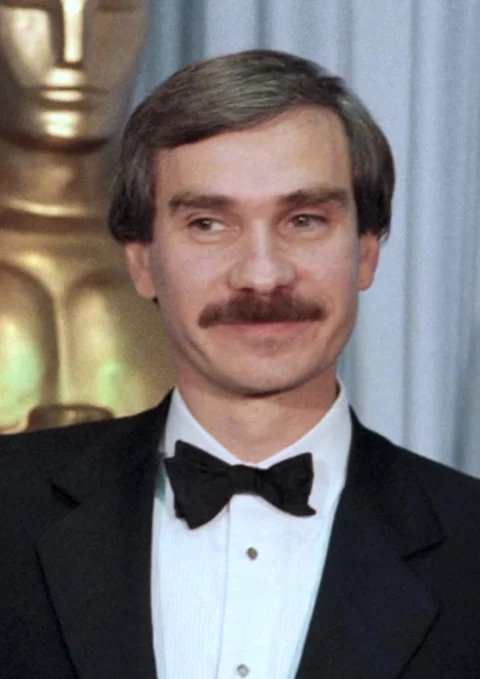

Explore film ↗
Explore film ↗Dirty Dancing
Emile Ardolino
DIRECTOR PROFILE
Emile Ardolino (May 9, 1943 – November 20, 1993) was an American television and film director and producer, best known for his work on the films Dirty Dancing (1987) and Sister Act (1992).

LIFE & CAREER
Emile Ardolino (May 9, 1943 – November 20, 1993) was an American television and film director and producer, best known for his work on the films Dirty Dancing (1987) and Sister Act (1992). He won an Academy Award for Best Documentary Feature for his film He Makes Me Feel Like Dancin' (1983).
Adapted excerpt from Wikipedia, CC BY-SA 4.0. Pronunciation notes omitted.
Read the full biographyImage: Photographer not specified on source profile. Source & rights: Copyrighted photo; no free licence stated ↗.
Profile reference: Director background ↗
Open this director checklist ↗
A selection of this director’s films available in the archive.
Explore film ↗Emile Ardolino